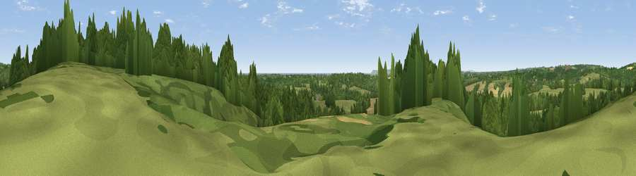

Viewpoint near Catsfield
#15961 in England · top 20% of its area beats it · near CatsfieldWhere it is
The exact computed spot (TQ 70625 14825). Click the marker for map links.
The view, rendered

A 360° render of this exact spot computed from the terrain model, tree cover and land cover — summer colours, afternoon light, calibrated against photographs of famous viewpoints. Real trees, hedges and buildings will differ in detail.
The panorama
Grey silhouette: terrain skyline in each direction (720 bearings, Earth curvature and refraction included). Dashed green: skyline with trees (+15 m) and buildings (+8 m) as obstacles. Blue strip: how far the ground is visible on each bearing.
Where the view opens
Wedge length = distance to the farthest visible ground on that bearing (vegetation-aware). Rings at 10, 25 and 50 km.
What fills the view
51% woodland · 42% grassland · 6% cropland · 1% water ·
Angular shares of the visible panorama (visual magnitude), not map area. Landscape diversity 0.42 (0–1 Shannon).
Key numbers
More beautiful places nearby
The staircase of upgrades: each row has a higher view potential than everything closer. Driving times are estimates from straight-line distance, calibrated against real road routing — check an actual route before setting out.
| Place | Direction | Drive | Score |
|---|---|---|---|
| Viewpoint near Netherfield | N · 5 km | ~10 min | 64.5 |
| Viewpoint near Dallington | NW · 6 km | ~13 min | 67.2 |
| Viewpoint near Brightling | NNW · 7 km | ~14 min | 68.0 |
| Brightling Obelisk [Brightling Down] | NNW · 7 km | ~15 min | 69.1 |
| Viewpoint near Three Oaks | ESE · 12 km | ~23 min | 69.3 |
| Viewpoint near Hastings | ESE · 13 km | ~25 min | 70.5 |
| Viewpoint near Guestling Green | ESE · 14 km | ~26 min | 72.2 |
| Viewpoint near Fairlight | ESE · 15 km | ~27 min | 76.7 |
50.90768, 0.42550 · source: screening · position refined by local search. Computed location — check access rights before visiting.